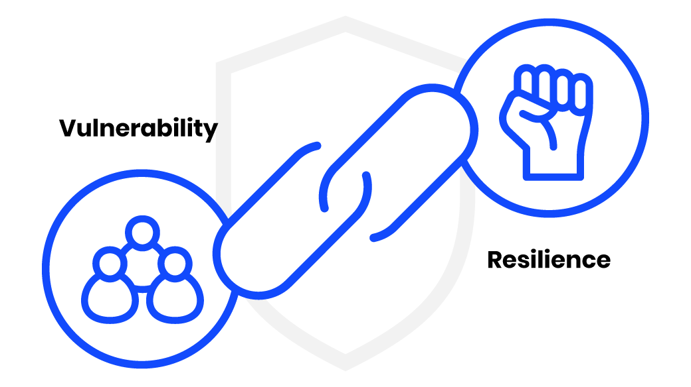
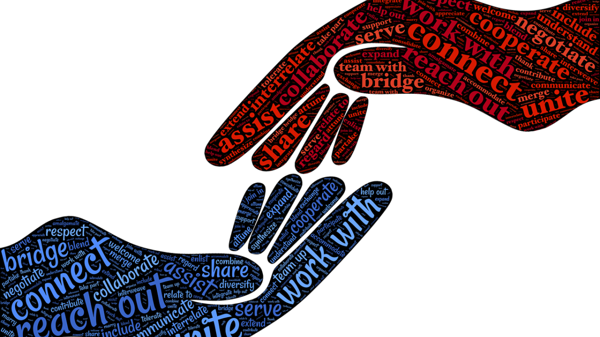

|
One of the hardest things anybody can do is to allow themselves to be genuinely seen for who they are. Often are we shadows of our real selves to the people we meet- wishing intently to show the sides of us that are not truly us for fear of admitting that we are so much less than the so carefully crafted character of goodness that we attempt to portray. Through being vulnerable and through taking risks on ourselves and on those around us, we are able to experience a much more fulfilling life- one that is free of many of our self imposed shackles that impede our growth.
|
 |
Benefits of vulnerablity:
|  |
Being More
Author and poet Ocean Vuong states in his novel On Earth We’re Briefly Gorgeous:
“The sunset, like survival , exists only on the verge of its own disappearing. To be gorgeous, you must first be seen, but to be seen allows you to be hunted."
Vulnerability is not easy. Click here here to dig deeper.
|